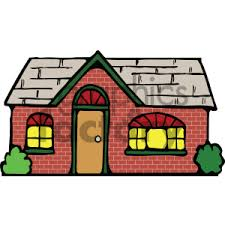
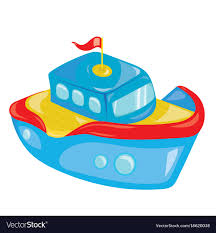

portfolio



Web Developer - Graphic Artist - User Experiuence Designer
We learnt how to use media quaries to create seperate mobile, tablets, and desktop layouts. Now we're going to add images to mix . Just as media quaries let usconditionaly present differebt CSS rules, we went to display images based on users device . We learned how to use mw=edia queries to create a seperate mobile,tableta and deskopo layouts.
We learnt how to use media quaries to create seperate mobile, tablets, and desktop layouts. Now we're going to add images to mix . Just as media quaries let usconditionaly present differebt CSS rules, we went to display images based on users device . We learned how to use mw=edia queries to create a seperate mobile,tableta and deskopo layouts.
vpo:rakkar, khaniyara Dharamshala, 176218
A 6-month program that helps you become a software developer By Altcampus